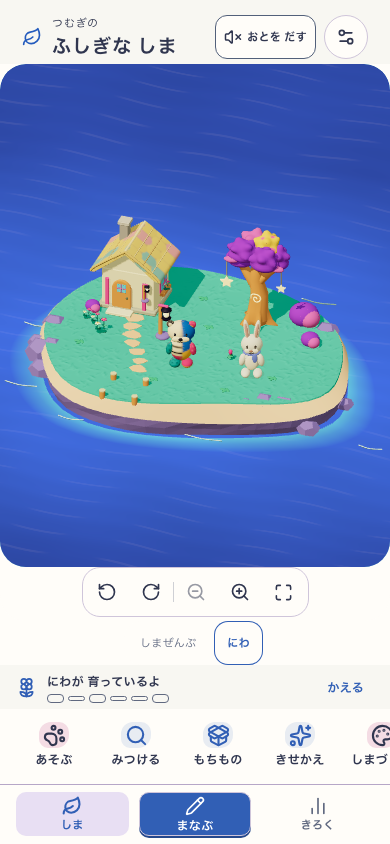
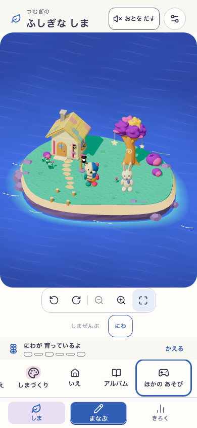
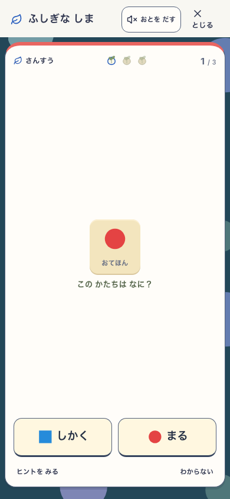
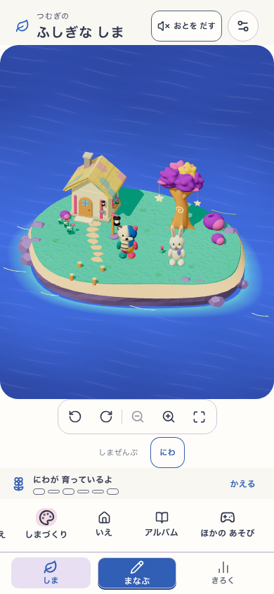
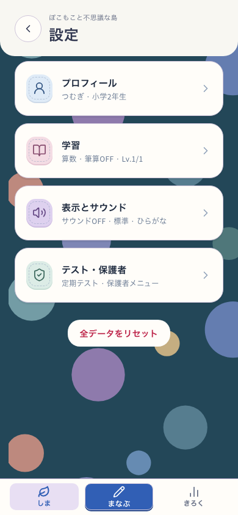
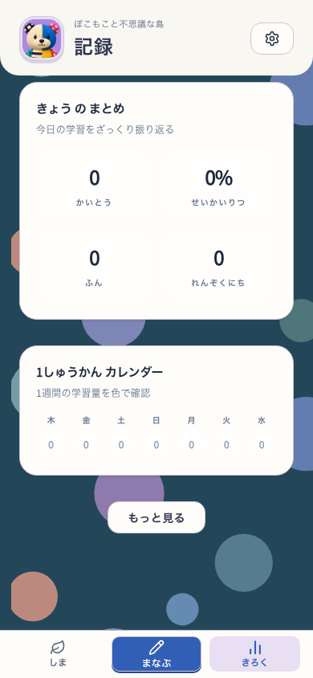
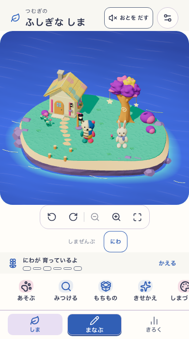
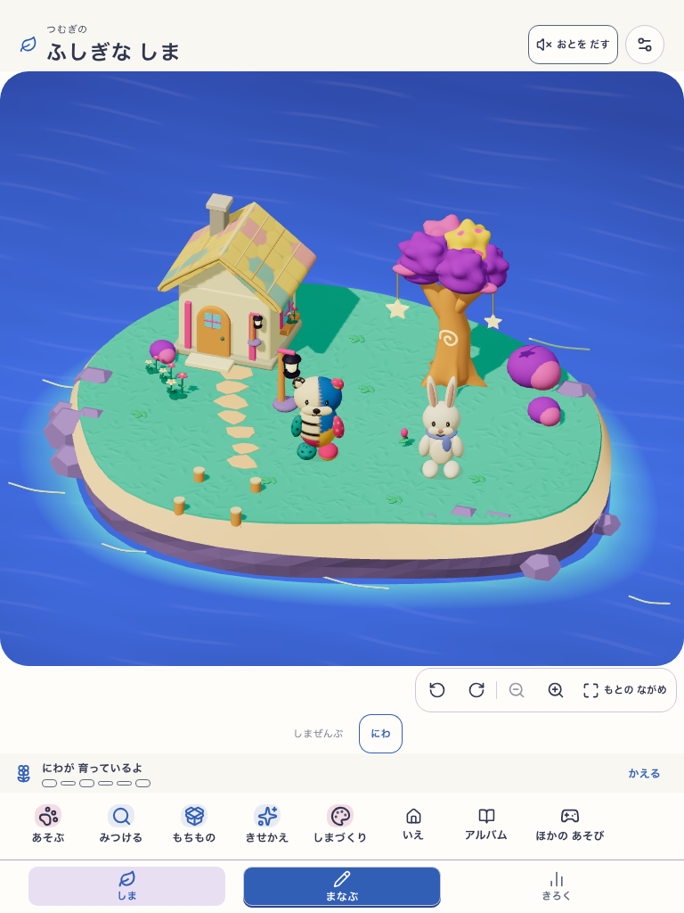

島を広く、タブを小さく
タブの高さを82pxから60pxへ。押せる範囲は44pxを保ちます。スマホの島の表示枠は約338pxから503pxになり、島の操作は横に送れる1列のメニューにまとめました。
 変更前 · 390 × 844
変更前 · 390 × 844
変更後 · 390 × 844学習を閉じると、タブとメニューの位置が戻る

横に送ったメニュー
学習中はタブを閉じる
閉じて元の位置に戻る設定・記録にも同じ小さいタブ

設定
記録短いスマホとタブレット

390 × 700
768 × 1024動く確認用アプリを開く
実際のアプリ画面 / home-space-v2:101c1ec2-b080-41af-97e5-677ebcff9c73
Island: mystic-island-shore-garden-v17 / VITE_ISLAND_ENABLED=true
表示枠の変更であり、庭のカメラ倍率と島のモデルは既存のまま。独立した子どもの理解・意欲テストは未実施。